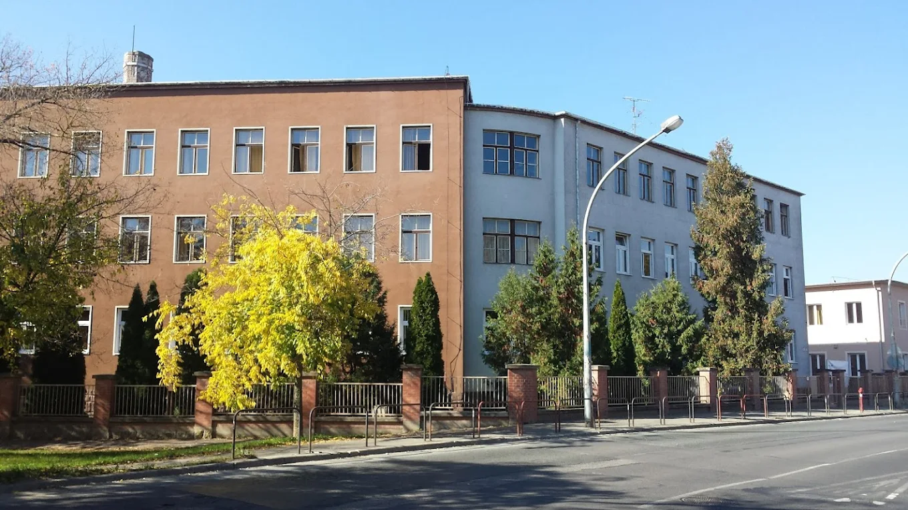

Ipari informatikai szak
A VVSC Gépipari és Informatikai Technikum egy gyakorlatorientált szakmai intézmény, ahol a korszerű technológiai ismeretek és a munkaerőpiacon hasznosítható tudás megszerzése áll a középpontban.Különféle szakmákat lehet tanulni, mint például elektronika gépészet informatika és ezekhez hasonló ipari tárgyak.
Ipari informatikai szakon végeztem, ez a szak leginkább az elektronika és az informatikai ismeretek fejlesztését segíti.Akár a villanyszerelés alapjait adó kapcsolási rajzok megértése és elkészítését vagy gépek komplett működésének leprogramozását. Ezen a szakon mindent tanultam.
A szakma elején alapképzést kaptam ez allat megismertem a villamos alapkötéseket, kapcsolásokat, megismertem a fémipar alapjait eszközök használatát. Ezek után volt egy Ágazati Alapvizsgám ez minden 10.évfolyamosnak van itt az elso 2 évben tanultakkból vizsgáztam. 11.évfolyamtól kezdve duális oktatásban vettem részt. Tapasztalatok.:Az első két év nagyon stabil alapot adott a következő éveken lévő megmérettetéseghez.
A gépipariban megszerzett tapasztalataim egy nagyon jó alapot nyújtanak a jövőmre való tekintettel.